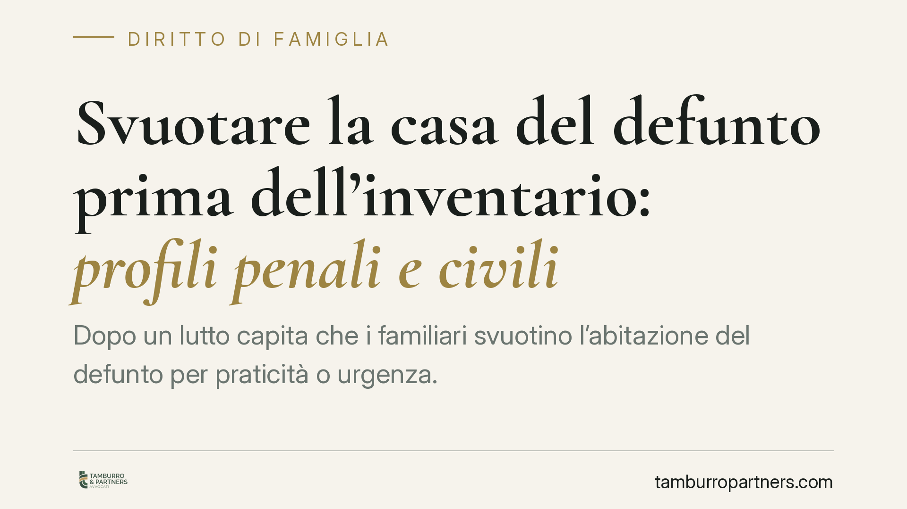

Svuotare la casa del defunto prima dell'inventario: profili penali e civili
Dopo un lutto capita che i familiari svuotino l'abitazione del defunto per praticità o urgenza. Il gesto, però, non è neutro: se compiuto prima dell'inventario può integrare un reato e, sul piano civile, far decadere dal beneficio d'inventario, esponendo l'erede ai debiti ereditari con tutto il proprio patrimonio.

Il fatto
Alla morte di una persona, chi resta si trova spesso a gestire mobili, effetti personali e documenti del defunto. La prassi di "liberare" subito l'appartamento, per restituirlo al proprietario o per semplice necessità, è diffusa. Meno noto è che disporre dei beni ereditari prima di aver definito la propria posizione di erede può avere conseguenze pesanti su due piani distinti: quello penale e quello civile.
Inquadramento normativo
Sul piano penale, la sottrazione dei beni del defunto da parte di chi non ne ha titolo può configurare l'appropriazione indebita (art. 646 c.p.), punita a querela della persona offesa. Il reato ricorre quando un soggetto si appropria di beni altrui di cui ha il possesso a titolo precario: è il caso, ad esempio, del familiare che asporta beni destinati anche ad altri coeredi o a creditori dell'eredità.
Sul piano civile operano due norme del codice civile. L'art. 527 c.c. prevede che i chiamati all'eredità i quali sottraggono o nascondono beni ereditari decadono dalla facoltà di rinunciare e sono considerati eredi puri e semplici, pur senza avere diritto alla propria quota sui beni sottratti. Ne deriva la responsabilità *ultra vires hereditatis*: l'erede risponde dei debiti del defunto anche con il proprio patrimonio personale, senza limiti.
L'art. 485 c.c. disciplina invece il chiamato nel possesso dei beni ereditari. Costui deve redigere l'inventario entro tre mesi dall'apertura della successione o dalla notizia della devoluta eredità; nei quaranta giorni successivi al completamento dell'inventario deve poi dichiarare se accetta o rinuncia. Il mancato rispetto di questi termini comporta l'acquisto della qualità di erede puro e semplice, con la stessa esposizione illimitata ai debiti.
La giurisprudenza di legittimità ha ricondotto all'art. 527 c.c. anche condotte di occultamento parziale, valorizzando l'elemento intenzionale della sottrazione. Si tratta di orientamenti che vanno verificati caso per caso, poiché la valutazione dipende in modo decisivo dalle circostanze concrete.
Implicazioni pratiche
Per chi eredita, il quadro è duplice. Da un lato c'è il rischio penale: l'asportazione di beni che spettano anche ad altri può tradursi in una querela per appropriazione indebita da parte di coeredi o creditori. Dall'altro c'è il rischio civile, spesso più insidioso: chi svuota la casa perde la possibilità di rinunciare all'eredità o di accettarla con beneficio d'inventario.
Il beneficio d'inventario è lo strumento che tiene separato il patrimonio del defunto da quello dell'erede, limitando la responsabilità per i debiti al valore dei beni ricevuti. È la tutela più utile proprio quando l'eredità è sospetta di essere gravata da debiti.
Qui emerge il paradosso: il gesto impulsivo di liberare l'abitazione fa saltare esattamente la protezione più preziosa. Chi agisce per fretta o per affetto verso gli oggetti del defunto può ritrovarsi a rispondere di debiti che ignorava, con il proprio stipendio e i propri beni.
Cosa fare in concreto
- Non rimuovere né distribuire alcun bene finché non è chiara la propria posizione di erede e, se necessario, non è stato redatto l'inventario.
- Redigere un inventario dei beni presenti nell'abitazione, con l'assistenza di un notaio o del cancelliere, nei termini di legge.
- Documentare lo stato dei luoghi con fotografie e un elenco dettagliato, così da prevenire contestazioni tra coeredi.
- Concordare per iscritto con gli altri coeredi ogni operazione sui beni, evitando iniziative individuali.
- Prima di compiere atti dispositivi, è opportuno valutare la convenienza dell'accettazione con beneficio d'inventario rispetto alla rinuncia, tenuto conto dell'eventuale passivo ereditario.
Quando l'eredità presenta debiti o la situazione tra coeredi è conflittuale, un confronto tempestivo con un professionista consente di scegliere lo strumento più adeguato prima che i termini di legge decorrano.
---
Contributo informativo a cura di Tamburro & Partners - Avv. Giuseppe Tamburro. Non costituisce parere legale.
Ogni famiglia ha il suo equilibrio.
Separazione, divorzio, affidamento, assegno: se vuoi un confronto riservato su una specifica situazione, scrivi allo studio. Ti rispondiamo entro un giorno lavorativo.